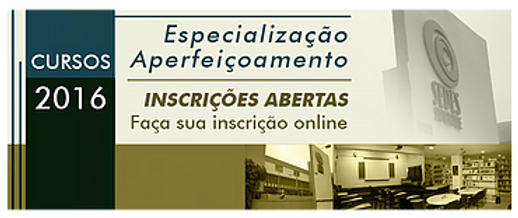

Inscrições abertas para a 8ª turma do Curso de Especialização e Aperfeiçoamento em Psicologia do Esporte e da Atividade Física coordenado pelas Profas. Luciana Angelo e Marisa Markunas.
Nestes 13 anos, especialistas de vários estados (SP, MG, SC, MA, RJ, BA, SE) foram formados, sendo eles psicólogos e profissionais da Educação Física. Mais de 15
professores convidados, supervisores e coordenadores tem como foco principal a diversidade de linguagens e pensamentos a respeito da especialidade apresentando linhas teóricas e campos de atuação, incentivando a criatividade dos alunos a enfrentar os dilemas da área.
Para esta turma algumas novidades:
– inscrições abertas para estudantes do 5º. Ano do curso de Psicologia e profissionais formados (psicólogos, educadores físicos, técnicos esportivos,
fisioterapeutas, nutricionistas, médicos e demais profissionais das Ciências do Esporte).
– aulas aos sábados (quinzenal) das 9h00 às 18h00.
– “Aperfeiçoamento em Psicologia do Esporte e da Atividade Física”- para quem
fizer o curso em 01 ano (2016), totalizando 183 horas, divididas em 174 horas/aula, 09 horas/supervisão e 12 horas de visita às instituições parceiras (visitas institucionais).
– “Especialização em Psicologia do Esporte e da Atividade Física”– para quem fizer os 02 anos (2016 e 2017) – No segundo ano, as disciplinas serão divididas em 02 módulos de caráter prático, com a inclusão das horas de Atividade Prática Profissional, Supervisão destas atividades, Oficina de Escrita e Leitura e Simpósio de apresentação de artigos. Carga horária total de 231 horas, divididas em 171 horas teóricas (12 horas/supervisão e 09 horas de Simpósio) e 60 horas de Atividade Prática Profissional.
Instituições parceiras fazem parte do curso tanto no primeiro quanto no segundo ano.
Anote na agenda: até dia 31 de janeiro inscrições abertas. Dias 03 e 04 de fevereiro
ocorrerá o processo seletivo.